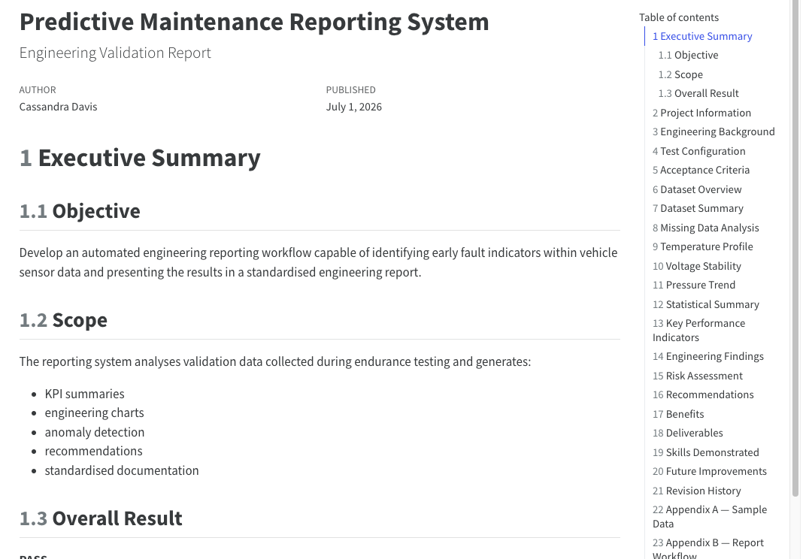
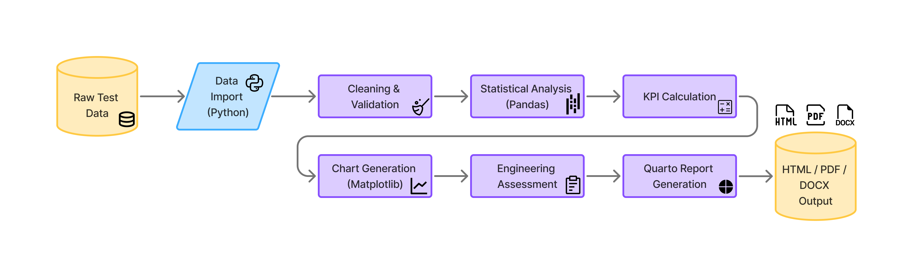
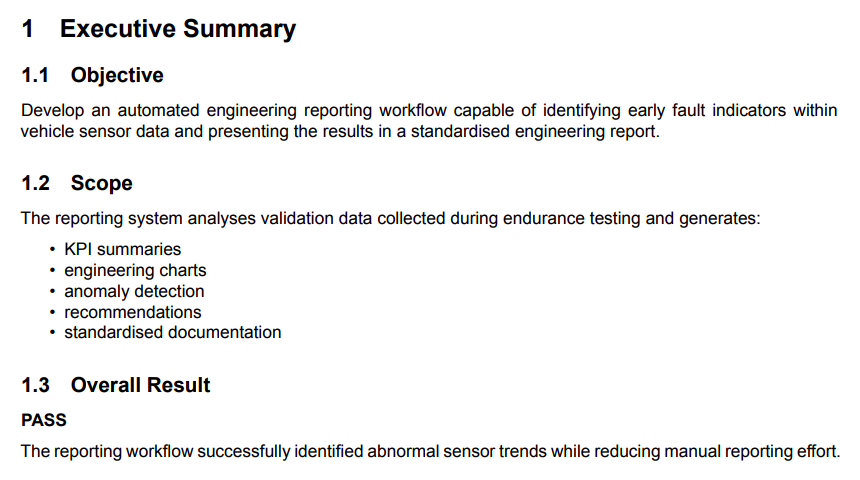
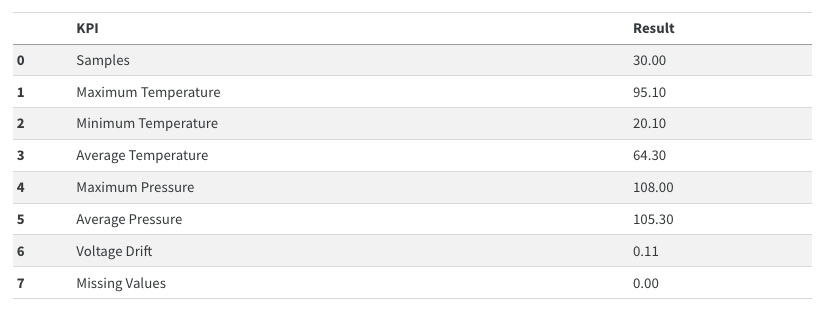
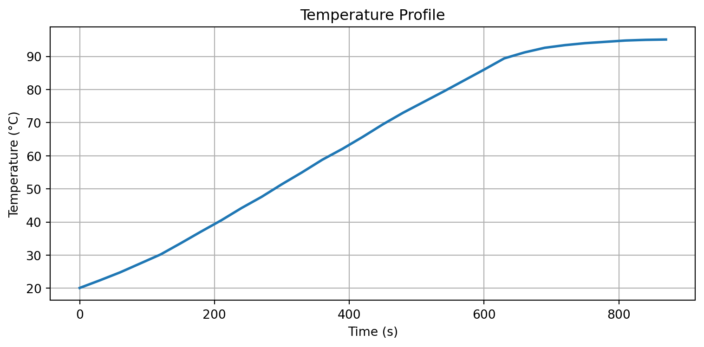
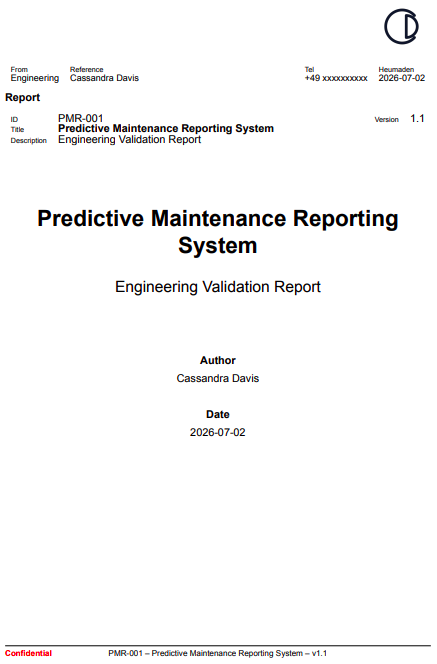

Automated Engineering Reporting System
Transforming raw engineering validation data into professional HTML, PDF and Microsoft Word reports using Python and Quarto.

Overview
This portfolio project demonstrates an automated engineering reporting workflow built with Python and Quarto. Raw validation data is analysed, visualised and transformed into a professional engineering report that can be published as HTML, PDF and Microsoft Word documentation from a single source.
Highlights
⚙️ Automated Workflow
Generate complete engineering reports from a single command.
📊 Data Analysis
Automatically calculate statistics, KPIs and engineering summaries.
📈 Visualisation
Create publication-ready charts directly from the validation dataset.
📄 Multi-format Output
Produce HTML, PDF and Word reports from the same source document.
Workflow

Report Preview
The finished report includes an executive summary, engineering analysis, KPI tables, charts, recommendations and appendices. Click any preview to view the full-size image.




Technologies
Skills Demonstrated
- Python automation
- Engineering reporting
- Data analysis
- Technical writing
- Workflow automation
- Technical documentation
- Data visualisation
- Professional report generation
Explore the Project
View the complete interactive report, browse the source code or download the PDF version.
This is a fictional portfolio project created to demonstrate engineering reporting, automation, technical documentation and data analysis skills.